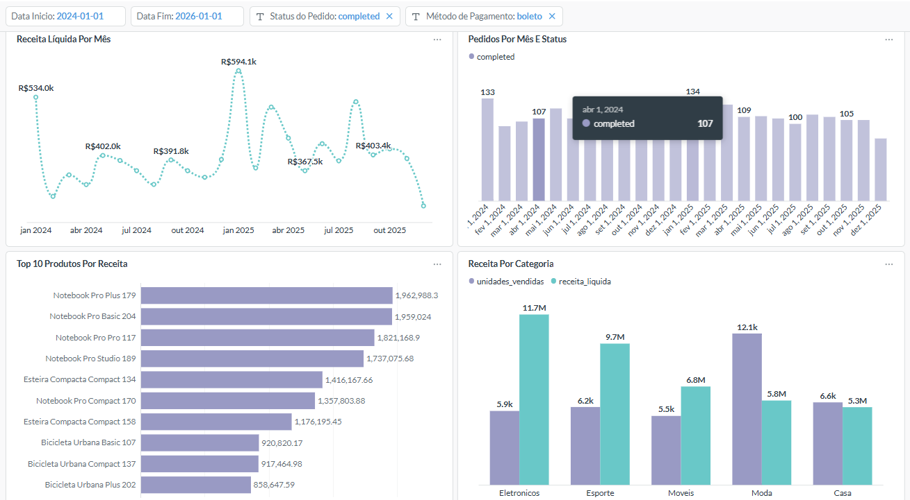
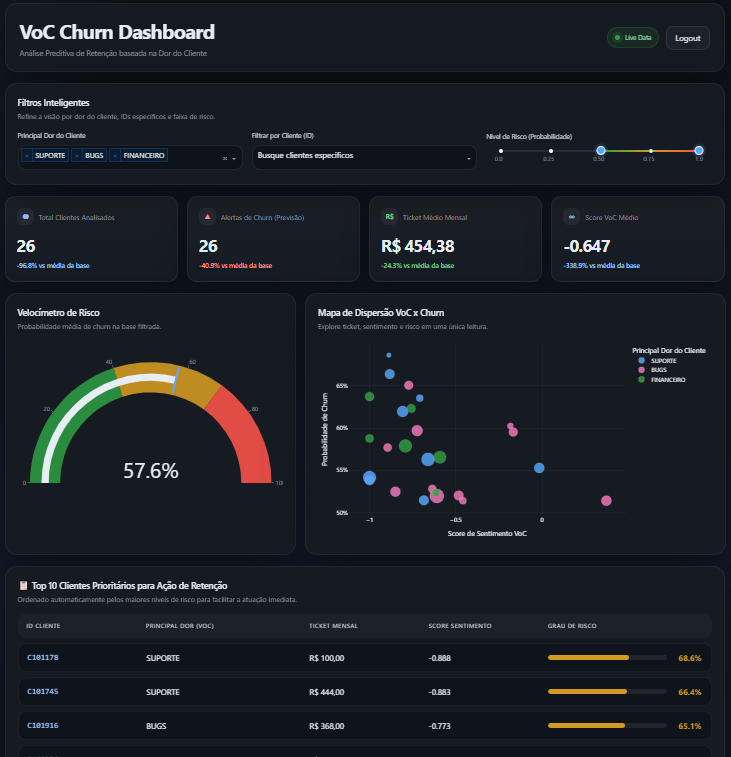
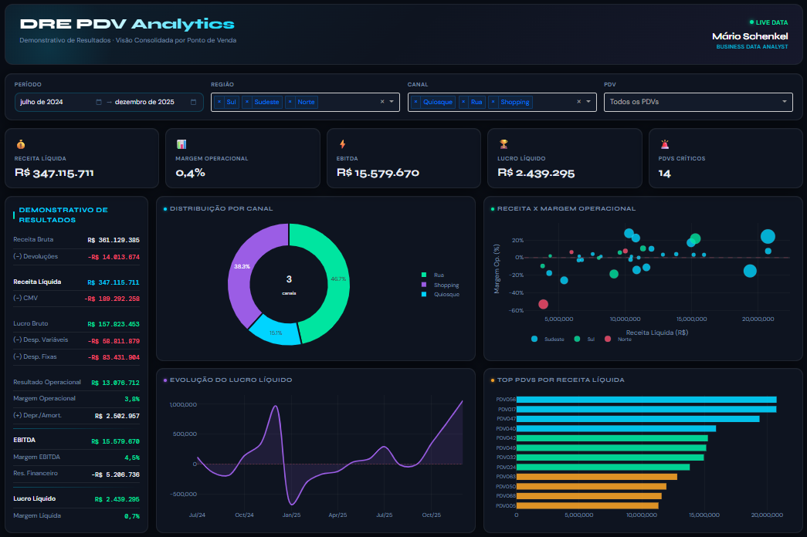
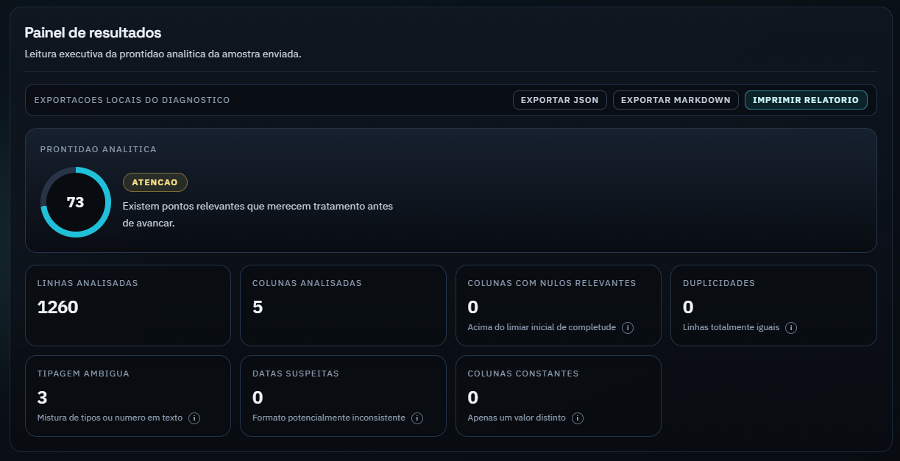
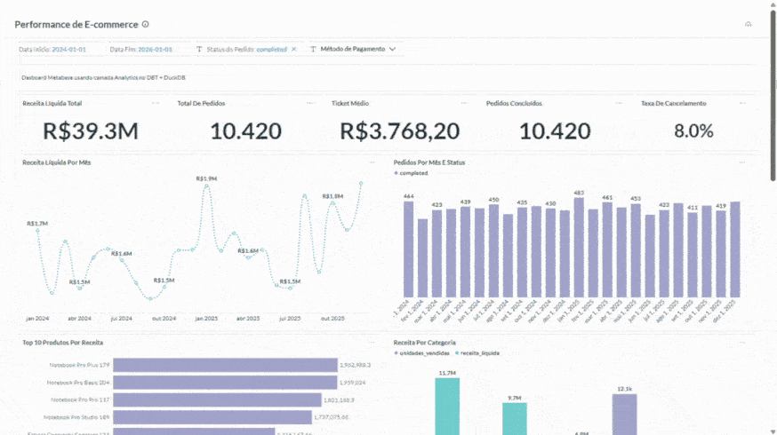

Três relatórios, três números diferentes
A mesma métrica aparece com valores distintos em cada área, e a reunião virou uma discussão sobre qual planilha está certa — não sobre a decisão.
A S³ Labs conecta a pergunta de negócio à engenharia de dados: modelagem auditável, painéis que sustentam decisão e automação que devolve tempo ao seu time. Conduzido do diagnóstico ao handover pelo próprio fundador.
A mesma métrica aparece com valores distintos em cada área, e a reunião virou uma discussão sobre qual planilha está certa — não sobre a decisão.
Boa parte da semana vai em extrair, copiar e formatar. A análise, que é o trabalho de verdade, fica para o final — quando sobra tempo.
A métrica existe, mas não tem dono, nem definição escrita, nem caminho de volta até a origem. Quando alguém questiona, não há resposta.
O projeto se arrasta sem entregar nada utilizável, e no fim a decisão é tomada por intuição — exatamente o que o projeto queria evitar.
Se você reconheceu mais de um, o gargalo provavelmente não é a ferramenta que você usa. É a camada que deveria existir entre o dado bruto e a decisão.
Na maior parte dos casos a ferramenta funciona bem. O que falta é anterior a ela: uma pergunta de negócio bem formulada, uma métrica com dono e definição e uma base que alguém auditou de verdade.
Cheguei a essa conclusão pelo caminho mais longo. Passei anos em controladoria, FP&A, pricing e revenue management — do lado de quem precisa olhar um número e decidir o que fazer com ele na segunda-feira. Vi de perto o custo de decidir sobre um dado que ninguém validou.
Foi por isso que migrei para engenharia e análise de dados: para resolver o problema onde ele nasce, em vez de maquiar o sintoma num gráfico bem desenhado. É esse repertório duplo — negócio e engenharia — que a S³ Labs coloca à mesa.
Dado que ninguém confia não é ativo, é passivo.
Meu trabalho é virar essa conta.
Sem projeto de seis meses que só mostra resultado no fim. O escopo é fechado depois do diagnóstico, não antes — porque antes seria chute.
Começo pela decisão que precisa ser tomada, não pela ferramenta. Mapeio fontes, processos, donos e o que já existe funcionando.
EntregávelDesenho as camadas e o modelo de dados, com testes automatizados e documentação nascendo junto do código — não depois.
EntregávelConstruo o painel ou a automação sobre o modelo pronto, validando número por número com quem vai usar aquilo para decidir.
EntregávelDocumentação, treinamento e transferência de conhecimento. O objetivo declarado é o seu time não depender de mim depois.
EntregávelTransformo dados crus em modelos confiáveis, testados e documentados — a base que todo painel honesto exige.
Painéis que respondem perguntas e cabem na rotina de quem decide, sem poluição visual e sem métrica órfã.
Integração de ponta a ponta: o dado chega no lugar certo, na hora certa, sem ninguém apertando botão.
O diferencial da casa: anos de controladoria por trás da análise. Falo a língua do CFO e a do engenheiro.
IA onde ela paga a conta: classificar, prever e resumir volumes que nenhum time daria conta de ler à mão.
Antes de construir, medir. Auditoria da base atual e treinamento para o time seguir sozinho depois da entrega.
Projetos construídos com dados demonstrativos para mostrar execução de ponta a ponta — do dado cru à decisão. Cada um tem repositório público, então você pode auditar o trabalho, não só ler sobre ele.

Pipeline analítico completo, do dado cru ao painel executivo: modelagem em dbt sobre DuckDB, testes automatizados e visualização em Metabase.

Classificação automática de feedbacks com NLP para extrair sentimento e tópico, substituindo a leitura manual de milhares de comentários.

Modelo preditivo que ranqueia clientes por risco de evasão e aponta o motivo, transformando a lista em ação de retenção.

Análise autônoma dos ofensores da DRE por ponto de venda, com plano de ação sugerido para cada unidade.

Ferramenta gratuita que diagnostica a qualidade de um CSV/XLSX antes da análise — sem upload: o arquivo não sai da máquina.
Sou Mário Schenkel, fundador da S³ Labs. Minha formação é em Administração, com MBA em Administração de Banco de Dados — e essa combinação não é acidente: ela descreve exatamente o lugar onde eu trabalho, no cruzamento entre a área que decide e a que constrói.
Atendi banco, SaaS de capital aberto, meios de pagamento e educação. São setores com réguas de rigor muito diferentes, e passar por todos ensinou a distinguir o que é exigência real de negócio do que é preferência de quem pediu o relatório.
Tradução de necessidades das áreas de negócio em modelagens e painéis de performance de jornadas de marketing, atuando como interface direta com stakeholders.
Projetos de dados com integração de IA e construção de painéis em Metabase e Tableau para análise financeira numa operação SaaS de capital aberto.
Desenvolvimento e automação de relatórios e pipelines em Power BI e SQL, sustentando as métricas estratégicas de um negócio de meios de pagamento.
Integridade e confiabilidade das informações financeiras e suporte à gestão em projetos de controladoria — onde a régua de "número confiável" foi calibrada.
Auditoria da base e do que já existe, com relatório de achados e recomendações priorizadas.
Para quem precisa saber o tamanho do problema antes de decidir quanto investir.
Entrega e prazo definidos: modelagem, painel ou automação, com handover e documentação.
Para quem já sabe o que precisa e quer prazo e preço fechados.
Algumas horas por semana com continuidade, evoluindo o que já está em produção.
Para quem precisa de capacidade analítica sem abrir uma vaga.
Resposta em até 24 horas úteis. A conversa inicial não tem custo nem compromisso.

Dados de e-commerce espalhados em arquivos crus, sem modelo, sem teste e sem ninguém capaz de responder com segurança qual produto realmente dava margem. Todo relatório nascia de um recorte manual diferente — e por isso nenhum número batia com o outro.
Quem consome o painel para de discutir se o número está certo e passa a discutir a decisão. O modelo é reproduzível por qualquer pessoa com um comando, e qualquer mudança de regra acontece em um lugar só — não em doze planilhas.
Milhares de feedbacks chegando em texto livre. Alguém lia uma amostra, tirava conclusões, e o resto virava arquivo morto. Sem classificação consistente era impossível dizer se um problema estava crescendo ou diminuindo.
A leitura manual saiu do caminho crítico: o time passou a acompanhar tendência de reclamação como acompanha qualquer KPI. E como cada categoria mantém o link para o texto de origem, a área de produto vai do gráfico à frase do cliente em dois cliques.
A retenção agia depois do cancelamento, quando o cliente já tinha decidido. Faltava saber quem estava em risco e, principalmente, por quê — porque uma lista de nomes sem motivo não vira ação comercial.
A retenção passa a trabalhar por fila priorizada, não por intuição. Cada contato já sai com a hipótese da dor daquele cliente, o que muda a conversa e melhora o aproveitamento do esforço comercial.
A DRE consolidada mostrava que a margem caiu, mas não onde. Descobrir qual unidade e qual linha de custo puxaram o resultado exigia garimpo manual por planilha, mês após mês.
É a tradução direta da bagagem de controladoria para código: em vez de a análise financeira depender de quem sabe onde olhar, ela vira rotina. O gestor abre o relatório e já recebe o ofensor e o encaminhamento.
Todo projeto de dados começa igual: alguém manda uma planilha e ninguém sabe o estado dela. Colunas duplicadas, datas em três formatos, campos vazios no meio. Esse diagnóstico é sempre feito à mão, sempre do zero.
É o passo zero do método virado produto. Rodar o diagnóstico antes de prometer prazo evita a surpresa mais cara de qualquer projeto de dados — e processar tudo no navegador remove a objeção de confidencialidade que costuma travar esse tipo de checagem.